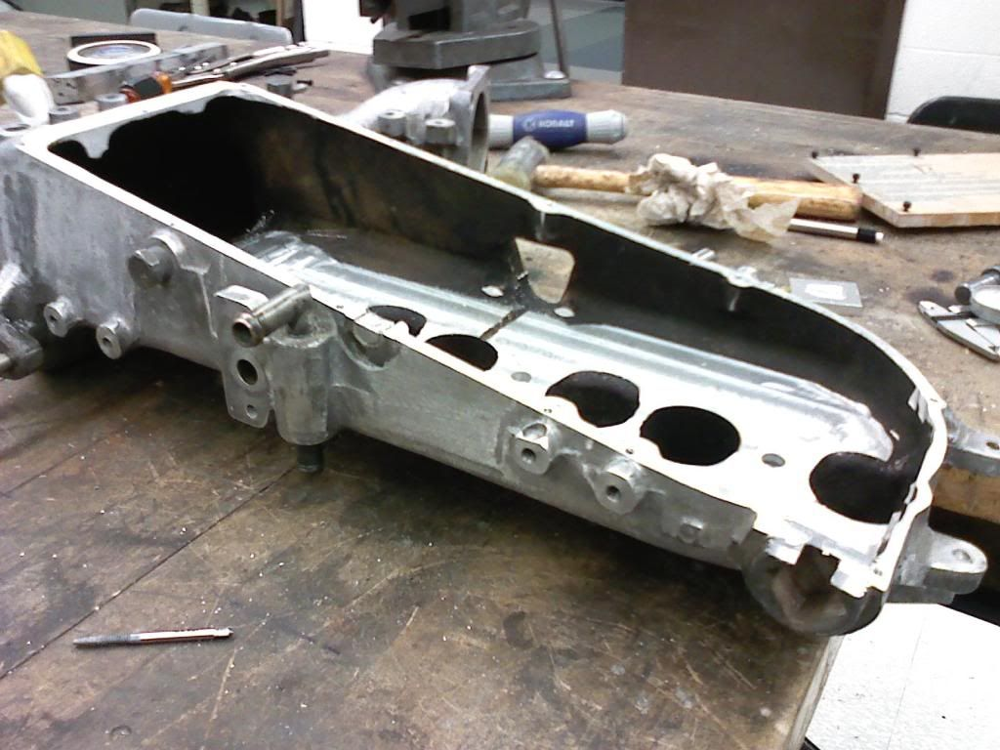
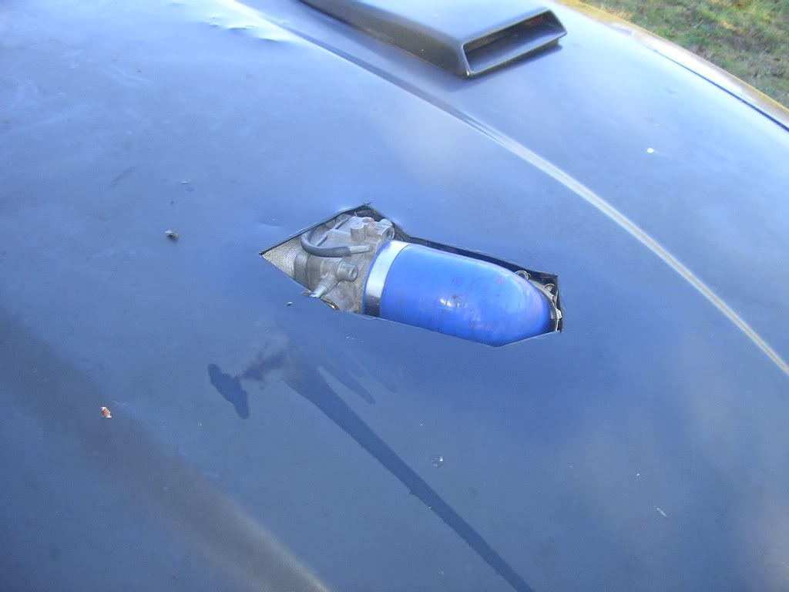

-
vg30de mounts work on the vg30e? is this confirmed? and does it lower the engine?
if so i have some z32 mounts in the garage.
we should make a "Z interchangeability" thread as for what parts from other cars work on a z, well aside from the standard m30,s12 yada yadyada. -
I've heard that they work but they're the same height as the the Z31 motor mounts. I was talking about solid motor mounts in my previous post but I'm sure you can get polyurethane motor mounts cut shorter than stock. Exactly how short you can go i don't know.
Are those pics of your Z32 with the VG30e in the engine bay? What mounts does it have in the pics?Shiro #443

-
ohhh, sorry rick i goofed that.
thats not my car in the pic, that is a guys car that i have been harassing for info. hes helped me alot in my decision to do this and he has a lot of good info.
the mounts that are in the pic are actually stock z31 mounts, he said he had to file just a little back and down from the female side of the crossmemeber to get the drivers side(?) to fit.
hes at the intake part now i guess, its been about a month since he has emailed me back.
after intake is done then wiring is next, i might get brave enough to do a plug and play harness and use a z32TT maff…but im getting way ahead of myself and outside of my scope of knowledge on that part. -
no, i had actually assumed thats what was being used.
ill ask the guy just to make shure.
im going to talk to SATAN(so weird saying that) to see if he can help with the intake.
also to z1 to talk to them about their poly motor mounts and if they drop the engine a bit. -
Z32 VG30E FTW, i actually wanna do that one day.
he gives me shit all the time about the money i spend on my car but he simply doenst understand what type of "high" you get from watching a stock car transform into something alive with as much emotion and feelings as any human.Originally posted by PurePontiacKid -
I milled my z31 plenum to slope down. It looks like this has a chance of clearing. At least more of a chance than a maxi or a stock z31 one.
 -
Ah wonderful, that should really help the air starvation issue in the forwardmost cylinder.

1988 300zxt. gt35, stance, etc. Wheels: Varrstoen ES2 18x9.5 et-13 225/40. 18x10.5 et0 245/40
1990 jetta vr6'd -
Awww. Thanks DZ. -
what ever you do this isnt one of the solutions :nanan?re
Hi my names Daniel, im a Nissan addict
84 50th Anniversary z31 5-speed (finally got one!!!)
93 240sx coupe (dd and needs a vg)
"you'll never get the money out of it that you put in it, all the benefit is purly emotional. we have these cars simply for the love of the car itself. to drive is to love. -
That is a solution if you hide it with a hood scoop. -
Did you try the shorter motor mounts?Shiro #443
-
@nissan xrma. what did you use to mill it? that looks like a very good option. Are you doing this swap as well?
@ rick88s: i sent z1 an email about their mounts yesterday, but no response yet. im not going solid mounts but they have some poly mounts that seem like they are a good option.
im buying a bare block, should be a complete transaction in two weeks (payday).
Im shooting for a conservative 300hp to start with and im looking for a good Tq number. I have to source turbo parts as well but i gather that shouldnt be hard. I am doing some research on turbos and what will meet my turbo needs. i want a good even boost, not just a burst all at once. Holset has been the one suggested to me so far, but i think a stock turbo from another car will hold out just as well untill i get some of the other stuff like suspension and bushings worked out. also im doing a 1pc aluminum driveshaft and a lightweight flywheel.
I dont think ill do a short shifter but i dont know, that plays a back seat to performance.
my major concern right now is which cluch to go with(lol). I just put a clutch on the z32 and it doesnt have any miles on it but its a stock NA clutch so i doubght it will hold up, and i dont think i want to try and see. -
That's actually me that's swapping the VG30E into the Z32 :mrgreen:
The Z32 motor mounts do bolt up. One side bolts up directly, the other side required filing two holes slightly with a bastard file to get it mounted. I can't remember which two holes since its been a while though lol. As far as intake manifolds go, currently the only bolt on option is going to be the S12 VG intake manifold. The 2nd gen Maxima front is too high, like in the pictures, Pathfinder is way too high, Z31 manifold won't clear the firewall, 3rd gen Maxima would require the upper and lower plenum to be reversed on the engine to possibly work and even then might cause coolant line issues since you're reversing the lower plenum. Custom would definitely be the way to go but for a quick bolt on setup the S12 plenum will work.
On the motor mounts, I'm not sure how they compare to the Z31 mounts. They might be slightly different as the crossmember could be at a different angle, I'm not sure. If they would work in the Z31 they would be quite nice as they are aluminum.
For the transmission the N/A Z32 would be the way to go. A 3rd gen Maxima flywheel with a 240mm Z31 clutch would allow it to bolt right up (you can use a different clutch kit, usually the Z31 clutch kits are cheaper than the Maxima kits but whichever works best for you will work).
I'm actually working on a way to use the Z32 crank for various reasons. Would require some machining to the block with my current idea but that might change. Best way would be to just stick with the stock crank but if this works it will be another option. -
haha, there you are you slippery devil.
thanks for cearing that up about the na trans.
ive decided to follow in your footsteps as you can see.
i got a block that im looking at buying in two weeks.
the biggest thing i want to do is make a plug and play wiring harness for this swap. and figure out wich ecu to use. the tt z has a decent ecu for what it is, from what i understand. i might just go piggyback and call it a day?
how far along on yours are you? -
if electronics aren't your game, get a standalone to ditch the stock ECU and have someone wire it up for you.
Initial cost is high, but then you have less qualms with the stock EFI if that's what's troubling you.
Then you're set to make way more power with the DETT than with the ET simply due to it's improved design.
But I still think this is pretty cool. Everyone went tits over the SR20 350z. so what the hell.

Copyright © 2006–. All rights reserved. Privacy Policy